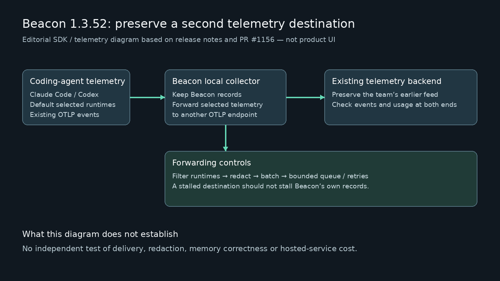

记忆工具不能让原有账本失联
Beacon的基础任务是把不同代理留下的会话整理到同一处，再把有用的调试经验和项目约定交给后续任务。开发者无需每次换助手都重述同一件事，但团队可能已经让Claude Code或Codex向另一个平台发送用量记录。此次合并说明指出，安装Beacon会把这些运行端改接本地采集器，旧后端因而收不到数据。新增转发解决的是这个接入冲突，不是证明记忆让所有代理表现更好，也不是重新发布已经存在的跨工具记忆功能。
Beacon 1.3.52 · 开源工具更新 · 官方发行与合并记录

Beacon的基础任务是把不同代理留下的会话整理到同一处，再把有用的调试经验和项目约定交给后续任务。开发者无需每次换助手都重述同一件事，但团队可能已经让Claude Code或Codex向另一个平台发送用量记录。此次合并说明指出，安装Beacon会把这些运行端改接本地采集器，旧后端因而收不到数据。新增转发解决的是这个接入冲突，不是证明记忆让所有代理表现更好，也不是重新发布已经存在的跨工具记忆功能。
转发管线可以按运行端筛选，默认针对Claude Code和Codex，再做脱敏与批量发送。队列与重试有上限，目的是让外部后端故障不拖住Beacon自身记录。团队实际接入时应比较两边的同一事件，而不是只检查连接状态：时间、调用身份、用量字段是否完整，哪些内容被删去，以及目的地中断后缺了哪一段。特别是用量数字被误当秘密删掉时，报表仍可能看似正常，却低估成本；恢复原值也不能顺便恢复本该隐藏的凭据。
仓库区分本地记录、查看界面和托管发送。交互式安装预选Beacon Cloud，确认后开始转发，也提供选择本地的入口；只登录不等于已发送。本地命令行和只读仪表板可以检查历史，托管服务则另有连接流程。对保存客户代码或内部讨论的团队，真正需要核对的是目的地和采集范围，而不是只凭本地优先四个字下判断。会话里可能包含提示、文件活动和审批，发送范围比一张简单的token统计表更宽。
公开仓库采用MIT许可，提供多平台安装；托管服务成本和本次具体工作流费用未确认。手工整理项目说明、保存排障记录或继续使用原有观测平台，都是可比较的替代方案。评估时可选一个已解决的问题，让下一次会话调用经验，再故意改变项目条件，看过时规则能否被发现和修订。若只减少了重复输入，却反复引用旧约定，维护成本会回到人工身上。此次发行改善数据接续，长期记忆正确性、节省时间和数据处理承诺仍需单独验证。